pacman::p_load(sf, spatstat, terra, tmap, tidyverse)Hands-on Exercise 2
Spatial Point Patterns Analysis with R
1 Overview
This exercise applies Spatial Point Patterns Analysis (SPPA) to the locations of childcare centres in Singapore. It follows the two chapters assigned for Lesson 2: r4gdsa Chapter 4 and Chapter 5. Where I write “the chapters” below, I mean those two.
Part 1 reproduces the first-order methods from r4gdsa Chapter 4: methods that measure the intensity of points: the Clark–Evans nearest-neighbour index and kernel density estimation, including bandwidth selection, kernel choice, and fixed versus adaptive bandwidth.
Part 2 reproduces the second-order methods from Chapter 5: methods that measure the spatial dependence between points: the G, F, K and L functions, each tested against Complete Spatial Randomness (CSR) using Monte Carlo envelopes, for two contrasting planning areas.
Part 3 is where most of my time went. It is a working diary: the choices the chapters leave to the software, how far the conclusions move when those choices change, what the week’s readings add when applied to this data, and where the analysis runs out.
2 Getting started
2.1 Packages
2.2 The data
Two datasets are used. Both come from Data.gov.sg, with one caveat to state up front:
- Childcare centres: the published table Listing of Centre Services is an address list with no coordinates, so it cannot be mapped as it stands. The layer used here is
ChildCareServices.kml, the geocoded version distributed with the chapters, produced by the OneMap workflow Kam demonstrated in Lesson 1. - Planning subzones: URA 2019 Master Plan subzone boundaries (no sea). This is the same file used in Hands-on Exercise 1, so the wrangling carries straight over.
The KML stores points as XYZ with a zero Z, which spatstat will not accept, so st_zm() drops the third dimension. Both layers are then transformed to SVY21 (EPSG:3414) so that every distance, area and bandwidth below is in metres rather than degrees.
childcare <- st_read("data/geospatial/ChildCareServices.kml", quiet = TRUE) |>
st_zm(drop = TRUE, what = "ZM") |>
st_transform(3414)
mpsz <- st_read("data/geospatial/MasterPlan2019SubzoneBoundaryNoSea.geojson",
quiet = TRUE) |>
st_transform(3414)st_crs(childcare)$epsg[1] 3414nrow(childcare)[1] 19253 Part 1: First-order methods
First-order methods ask how dense the points are and whether that density varies across space. Two families are covered: the nearest-neighbour approach (Clark–Evans) and density estimation (KDE).
3.1 From sf to a point pattern
spatstat works with its own object classes: ppp for the point pattern and owin for the observation window. An sf point layer becomes a ppp in one step.
childcare_ppp <- as.ppp(childcare)summary(childcare_ppp)Marked planar point pattern: 1925 points
Average intensity 2.417323e-06 points per square unit
Coordinates are given to 11 decimal places
Mark variables: Name, Description
Summary:
Name Description
Length :1925 Length :1925
N.unique :1925 N.unique :1925
N.blank : 0 N.blank : 0
Min.nchar: 5 Min.nchar:1068
Max.nchar: 8 Max.nchar:1171
Window: rectangle = [11810.03, 45404.24] x [25596.33, 49300.88] units
(33590 x 23700 units)
Window area = 796335000 square unitsThe pattern has 1925 points. The observation window is the rectangle enclosing the points, not yet the study area. That matters, because every first-order measure is computed relative to the window.
3.2 Defining the study area
The window should be the area we actually want to make claims about. For a national-level analysis, that is the Singapore mainland boundary, which I build by dissolving the subzone boundaries.
sg_boundary <- st_union(mpsz)
sg_owin <- as.owin(sg_boundary)plot(sg_owin)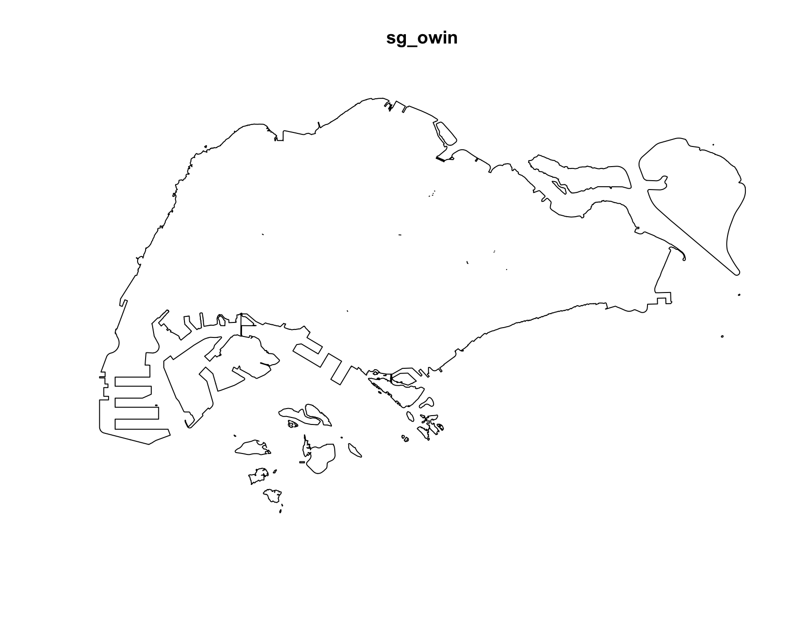
Now the points are clipped to the window. Any point outside (there should be none in this case) would be dropped here.
childcareSG_ppp <- childcare_ppp[sg_owin]childcareSG_ppp$n[1] 19253.3 Clark–Evans nearest-neighbour test
Clark and Evans (1954) compare the mean observed nearest-neighbour distance against what would be expected under Complete Spatial Randomness (CSR). The index R is the ratio of the two:
- R < 1: points are closer than random, so clustered
- R ≈ 1: consistent with CSR
- R > 1: points are further apart than random, so regular/dispersed
clarkevans.test(childcareSG_ppp,
correction = "none",
clipregion = sg_owin,
alternative = "clustered")
Clark-Evans test
No edge correction
Z-test
data: childcareSG_ppp
R = 0.49444, p-value < 2.2e-16
alternative hypothesis: clustered (R < 1)The test can also be run as a Monte Carlo simulation rather than the analytic normal approximation, which is slower but does not rely on distributional assumptions.
clarkevans.test(childcareSG_ppp,
correction = "none",
clipregion = sg_owin,
alternative = "clustered",
method = "MonteCarlo",
nsim = 999)
Clark-Evans test
No edge correction
Monte Carlo test based on 999 simulations of CSR with fixed n
data: childcareSG_ppp
R = 0.49444, p-value = 0.001
alternative hypothesis: clustered (R < 1)3.4 Kernel density estimation
The Clark–Evans index collapses the whole pattern into one number. KDE keeps the geography: it spreads a kernel over each point and sums the surfaces, producing a continuous density field that shows where intensity is high and low.
3.4.1 Automatic bandwidth selection
The bandwidth (the sigma of the kernel) controls how far each point’s influence extends, and it drives the appearance of the result more than anything else in KDE. The package offers several automatic selectors; the default is bw.diggle.
kde_SG_diggle <- density(childcareSG_ppp,
sigma = bw.diggle,
edge = TRUE,
kernel = "gaussian")plot(kde_SG_diggle)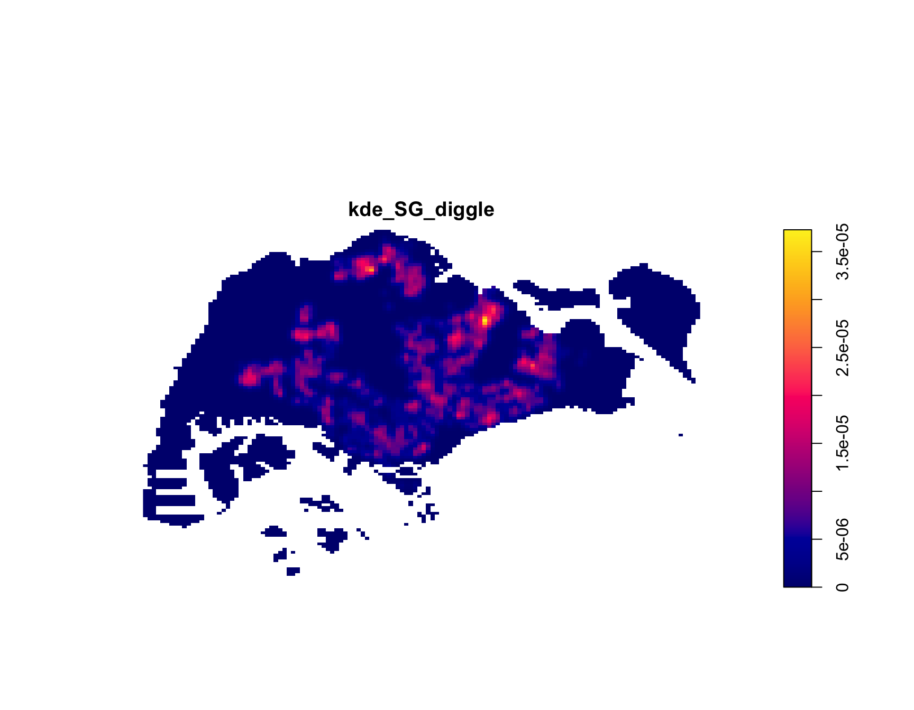
summary(kde_SG_diggle)real-valued pixel image
128 x 128 pixel array (ny, nx)
enclosing rectangle: [2667.538, 56396.44] x [15748.72, 50256.33] units
dimensions of each pixel: 420 x 269.5907 units
Image is defined on a subset of the rectangular grid
Subset area = 784443200.265293 square units
Subset area fraction = 0.423
Pixel values (inside window):
range = [-9.66262e-21, 3.727443e-05]
integral = 1927.013
mean = 2.456536e-06The densities here are in per square metre units, which are awkward to read (the integral of the surface is the number of points). Rescaling the pattern to kilometres makes the values interpretable as centres per square kilometre.
childcareSG_ppp_km <- rescale.ppp(childcareSG_ppp, 1000, "km")
kde_childcareSG_km <- density(childcareSG_ppp_km,
sigma = bw.diggle,
edge = TRUE,
kernel = "gaussian")summary(kde_childcareSG_km)real-valued pixel image
128 x 128 pixel array (ny, nx)
enclosing rectangle: [2.667538, 56.39644] x [15.74872, 50.25633] km
dimensions of each pixel: 0.42 x 0.2695907 km
Image is defined on a subset of the rectangular grid
Subset area = 784.443200265292 square km
Subset area fraction = 0.423
Pixel values (inside window):
range = [-1.092987e-14, 37.27443]
integral = 1927.013
mean = 2.4565363.4.2 Comparing the selectors
The four common selectors optimise different criteria, so they return different bandwidths. Rather than accept the default silently, I compare them.
bw.CvL(childcareSG_ppp_km) sigma
4.543204 bw.scott(childcareSG_ppp_km) sigma.x sigma.y
2.159749 1.396455 bw.ppl(childcareSG_ppp_km) sigma
0.3897071 bw.diggle(childcareSG_ppp_km) sigma
0.2954419 There is an order-of-magnitude spread here, from about 0.39 km (bw.ppl) to 4.54 km (bw.CvL). Since all four are defensible choices, the map itself is only as settled as the selector behind it. Part 3 works through what that does to the surface.
bw.scott stands out here, because it is the rule Donthu and Rust use. They pick the bandwidth that would be optimal if the data were bivariate normal, while admitting “we have no reason to actually expect the underlying distribution to be bivariate normal”. On this data that rule returns about 2.2 km against bw.diggle’s 0.30 km, roughly seven times wider. Since their paper uses the density surface to choose a store location, the two rules would suggest visibly different catchments from identical data. The 1989 advice is not wrong, but it is much smoother than a modern cross-validation selector, and a siting decision taken from one surface rather than the other would land in a different place.
3.4.3 The kernel function
The kernel is the shape of the influence region. spatstat’s default is Gaussian; quartic and Epanechnikov kernels are common alternatives. At the same bandwidth they produce broadly similar surfaces, differing mostly in how sharply the tails fall off.
par(mfrow = c(1, 2))
plot(density(childcareSG_ppp_km, sigma = 0.296, kernel = "gaussian"), main = "Gaussian")
plot(density(childcareSG_ppp_km, sigma = 0.296, kernel = "quartic"), main = "Quartic")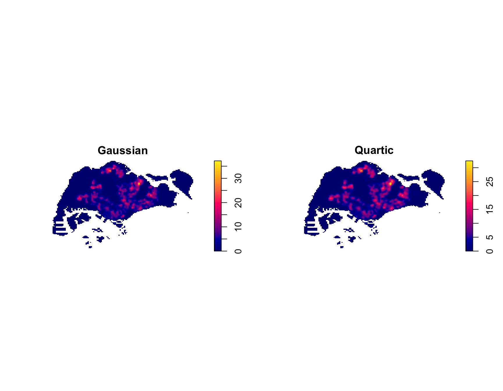
par(mfrow = c(1, 1))3.4.4 Fixed versus adaptive bandwidth
A fixed bandwidth applies the same smoothing radius everywhere. An adaptive bandwidth shrinks the radius where points are dense and widens it where they are sparse, which is usually the better assumption for a service like childcare whose supply follows population density closely.
kde_fb <- density(childcareSG_ppp_km, sigma = 0.6, edge = TRUE, kernel = "gaussian")kde_ab <- adaptive.density(childcareSG_ppp_km, method = "kernel")par(mfrow = c(1, 2))
plot(kde_fb, main = "Fixed bandwidth (0.6 km)")
plot(kde_ab, main = "Adaptive bandwidth")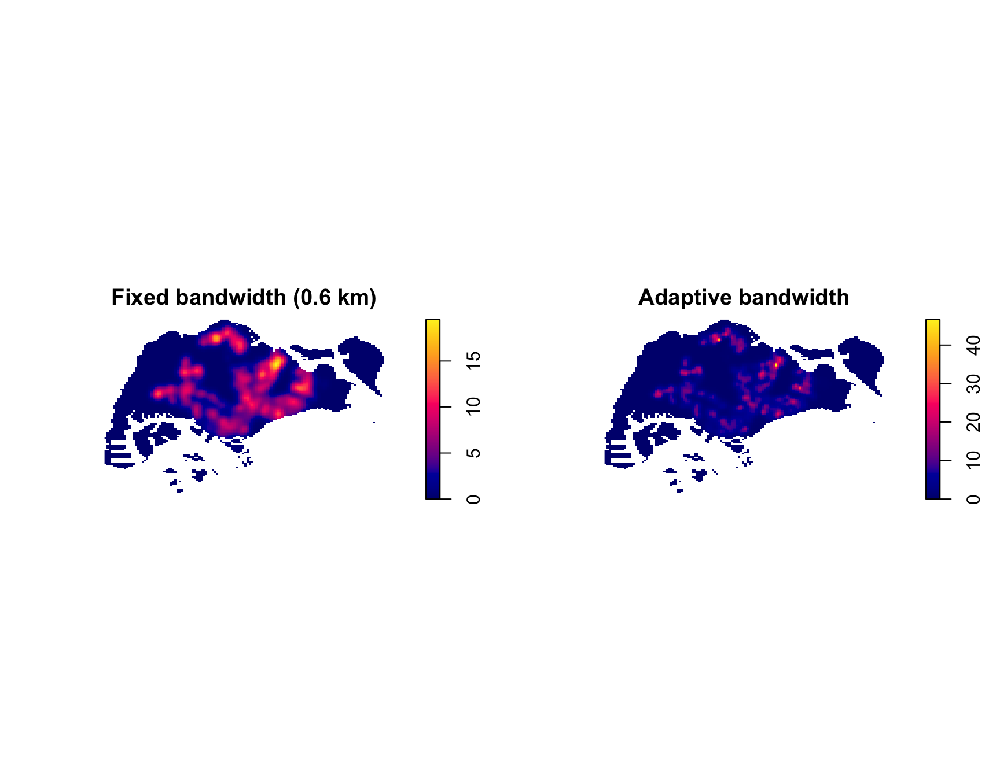
par(mfrow = c(1, 1))3.5 A cartographic KDE map
The spatstat density object is a pixel image. To map it properly I convert it to a raster, assign the correct CRS, and map with tmap.
A unit note, because it is easy to get wrong: the density computed on the metre-based pattern is in centres per square metre, which is awkward to read. I compute it in metres (so the raster extent is in metres and the CRS is honest) and multiply the values by 10⁶ to display them as centres per km².
kde_terra <- rast(density(childcareSG_ppp, sigma = bw.diggle, edge = TRUE)) * 1e6
crs(kde_terra) <- "EPSG:3414"kde_terraclass : SpatRaster
size : 128, 128, 1 (nrow, ncol, nlyr)
resolution : 419.757, 269.5907 (x, y)
extent : 2667.538, 56396.44, 15748.72, 50256.33 (xmin, xmax, ymin, ymax)
coord. ref. : SVY21 / Singapore TM (EPSG:3414)
source(s) : memory
name : lyr.1
min value : -0
max value : 37.274432tm_shape(mpsz) +
tm_borders(col = "grey60", lwd = 0.3) +
tm_shape(kde_terra) +
tm_raster(col.scale = tm_scale_continuous(values = "viridis"),
col.legend = tm_legend(title = "Centres per km²",
title.size = 0.8,
text.size = 0.7,
position = tm_pos_in("right", "bottom"),
bg.color = "white",
bg.alpha = 0.7,
frame = TRUE)) +
tm_graticules(lines = FALSE) +
tm_layout(legend.frame = TRUE) +
tm_compass(position = tm_pos_in("left", "top")) +
tm_scalebar(position = tm_pos_in("left", "bottom"))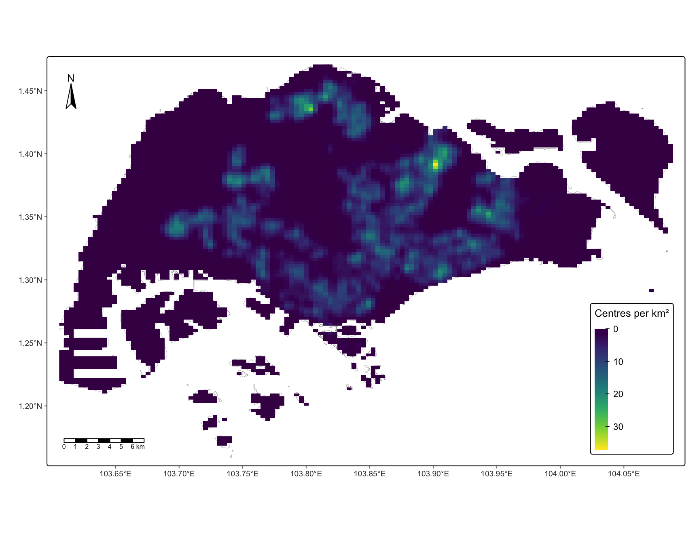
3.6 Analysis by planning area
National-level statistics hide a lot of local variation. The chapters repeat the Clark–Evans test and KDE within individual planning areas. I use the four areas the book uses (Punggol, Tampines, Choa Chu Kang and Jurong West) because they are demographically and physically different from each other.
pg <- mpsz |> filter(PLN_AREA_N == "PUNGGOL")
tm <- mpsz |> filter(PLN_AREA_N == "TAMPINES")
ck <- mpsz |> filter(PLN_AREA_N == "CHOA CHU KANG")
jw <- mpsz |> filter(PLN_AREA_N == "JURONG WEST")childcare_pg_ppp <- childcare_ppp[as.owin(pg)]
childcare_tm_ppp <- childcare_ppp[as.owin(tm)]
childcare_ck_ppp <- childcare_ppp[as.owin(ck)]
childcare_jw_ppp <- childcare_ppp[as.owin(jw)]c(punggol = childcare_pg_ppp$n, tampines = childcare_tm_ppp$n,
choa_chu_kang = childcare_ck_ppp$n, jurong_west = childcare_jw_ppp$n) punggol tampines choa_chu_kang jurong_west
72 117 74 110 clarkevans.test(childcare_ck_ppp, correction = "none", alternative = "two.sided", nsim = 999)
Clark-Evans test
No edge correction
Z-test
data: childcare_ck_ppp
R = 0.84097, p-value = 0.008866
alternative hypothesis: two-sidedclarkevans.test(childcare_tm_ppp, correction = "none", alternative = "two.sided", nsim = 999)
Clark-Evans test
No edge correction
Z-test
data: childcare_tm_ppp
R = 0.66817, p-value = 6.58e-12
alternative hypothesis: two-sidedpar(mfrow = c(2, 2))
plot(density(rescale.ppp(childcare_pg_ppp, 1000, "km"), sigma = bw.diggle), main = "Punggol")
plot(density(rescale.ppp(childcare_tm_ppp, 1000, "km"), sigma = bw.diggle), main = "Tampines")
plot(density(rescale.ppp(childcare_ck_ppp, 1000, "km"), sigma = bw.diggle), main = "Choa Chu Kang")
plot(density(rescale.ppp(childcare_jw_ppp, 1000, "km"), sigma = bw.diggle), main = "Jurong West")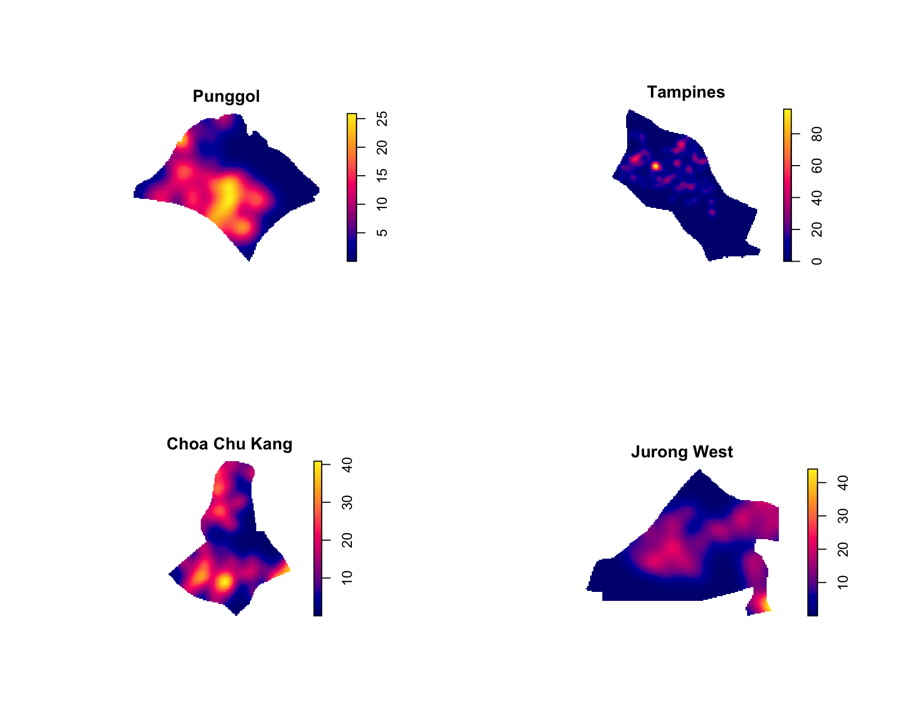
par(mfrow = c(1, 1))4 Part 2: Second-order methods
Second-order methods ask how the points are arranged relative to each other: clustered, dispersed or random, and at what distance. Where Part 1 says “intensity is high here”, Part 2 says “points attract or repel each other at these scales”.
For each function I compare Choa Chu Kang (a mature HDB town with a distinct centre) and Tampines (a large, densely built town), which lets the same statistic run against two quite different urban layouts.
4.1 The G function
The G function is the cumulative distribution of nearest-neighbour distances: G(r) is the probability that a random point has a neighbour within distance r. If points cluster, G(r) rises quickly for small r.
G_ck <- Gest(childcare_ck_ppp, correction = "border")
plot(G_ck, xlim = c(0, 500))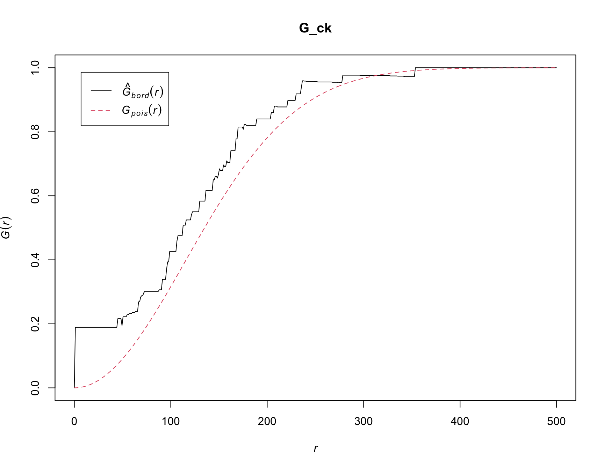
Testing against CSR requires a Monte Carlo envelope: the function is recomputed on many simulated CSR patterns, and the observed curve is compared against the simulated band.
G_ck.csr <- envelope(childcare_ck_ppp, Gest, nsim = 999)Generating 999 simulated realisations of CSR ...
1, 2, 3, ......10.........20.........30.........40.........50.........60..
.......70.........80.........90.........100.........110.........120.........130
.........140.........150.........160.........170.........180.........190........
.200.........210.........220.........230.........240.........250.........260......
...270.........280.........290.........300.........310.........320.........330....
.....340.........350.........360.........370.........380.........390.........400..
.......410.........420.........430.........440.........450.........460.........470
.........480.........490.........500.........510.........520.........530........
.540.........550.........560.........570.........580.........590.........600......
...610.........620.........630.........640.........650.........660.........670....
.....680.........690.........700.........710.........720.........730.........740..
.......750.........760.........770.........780.........790.........800.........810
.........820.........830.........840.........850.........860.........870........
.880.........890.........900.........910.........920.........930.........940......
...950.........960.........970.........980.........990........
999.
Done.plot(G_ck.csr)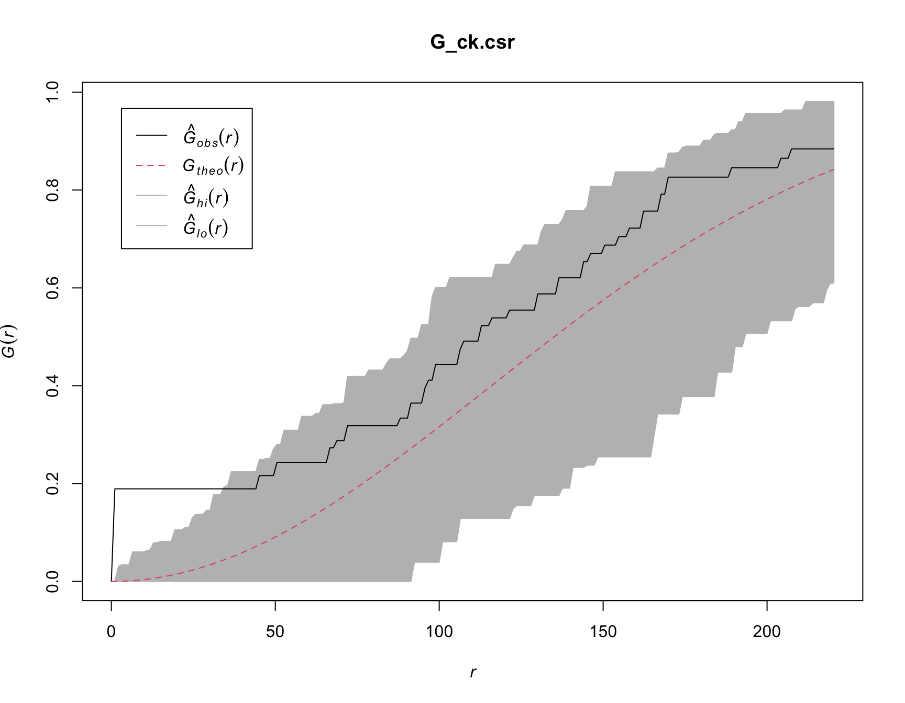
G_tm <- Gest(childcare_tm_ppp, correction = "best")
G_tm.csr <- envelope(childcare_tm_ppp, Gest, correction = "all", nsim = 999)Generating 999 simulated realisations of CSR ...
1, 2, 3, ......10.........20.........30.........40.........50.........60..
.......70.........80.........90.........100.........110.........120.........130
.........140.........150.........160.........170.........180.........190........
.200.........210.........220.........230.........240.........250.........260......
...270.........280.........290.........300.........310.........320.........330....
.....340.........350.........360.........370.........380.........390.........400..
.......410.........420.........430.........440.........450.........460.........470
.........480.........490.........500.........510.........520.........530........
.540.........550.........560.........570.........580.........590.........600......
...610.........620.........630.........640.........650.........660.........670....
.....680.........690.........700.........710.........720.........730.........740..
.......750.........760.........770.........780.........790.........800.........810
.........820.........830.........840.........850.........860.........870........
.880.........890.........900.........910.........920.........930.........940......
...950.........960.........970.........980.........990........
999.
Done.plot(G_tm.csr)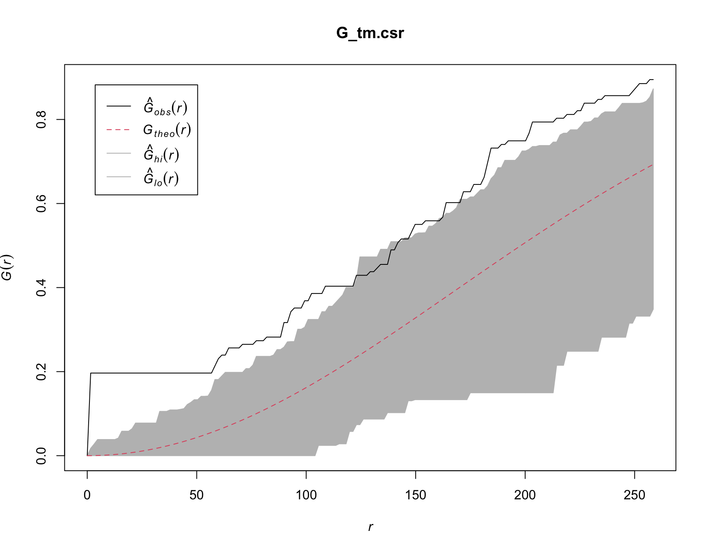
4.2 The F function
The F function is the complement view: the distance from arbitrary locations to the nearest point, not from points to points. Because it measures empty space rather than neighbour distances, it responds to gaps in the pattern where G responds to close pairs.
F_ck.csr <- envelope(childcare_ck_ppp, Fest, nsim = 999)Generating 999 simulated realisations of CSR ...
1, 2, 3, ......10.........20.........30.........40.........50.........60..
.......70.........80.........90.........100.........110.........120.........130
.........140.........150.........160.........170.........180.........190........
.200.........210.........220.........230.........240.........250.........260......
...270.........280.........290.........300.........310.........320.........330....
.....340.........350.........360.........370.........380.........390.........400..
.......410.........420.........430.........440.........450.........460.........470
.........480.........490.........500.........510.........520.........530........
.540.........550.........560.........570.........580.........590.........600......
...610.........620.........630.........640.........650.........660.........670....
.....680.........690.........700.........710.........720.........730.........740..
.......750.........760.........770.........780.........790.........800.........810
.........820.........830.........840.........850.........860.........870........
.880.........890.........900.........910.........920.........930.........940......
...950.........960.........970.........980.........990........
999.
Done.plot(F_ck.csr)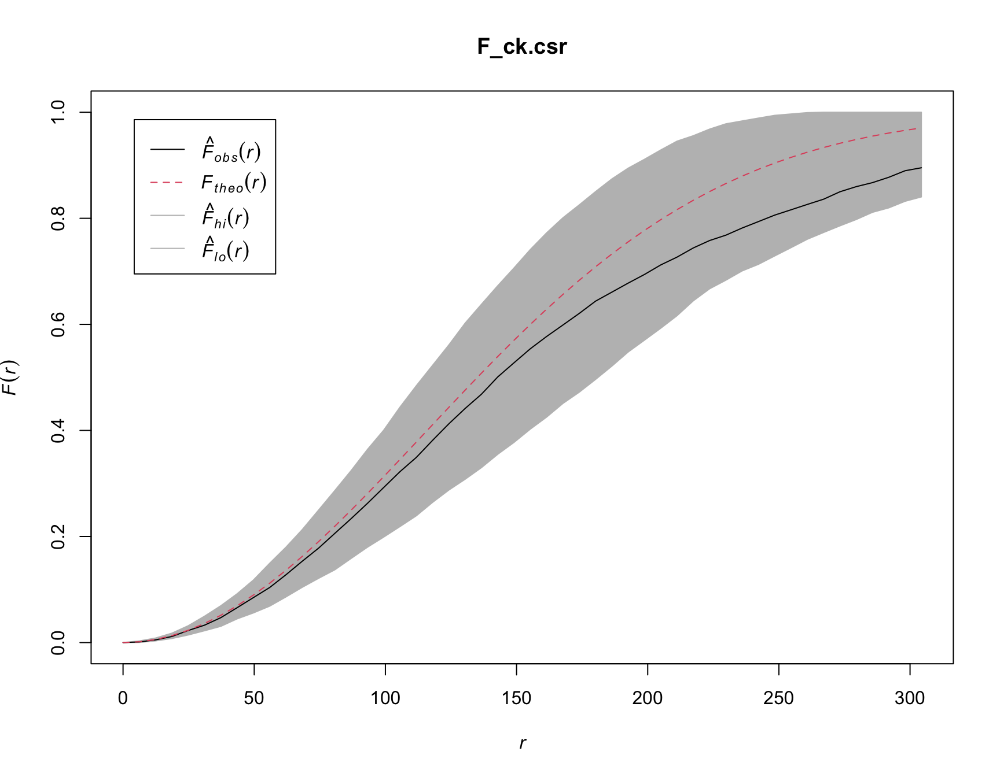
F_tm.csr <- envelope(childcare_tm_ppp, Fest, correction = "all", nsim = 999)Generating 999 simulated realisations of CSR ...
1, 2, 3, ......10.........20.........30.........40.........50.........60..
.......70.........80.........90.........100.........110.........120.........130
.........140.........150.........160.........170.........180.........190........
.200.........210.........220.........230.........240.........250.........260......
...270.........280.........290.........300.........310.........320.........330....
.....340.........350.........360.........370.........380.........390.........400..
.......410.........420.........430.........440.........450.........460.........470
.........480.........490.........500.........510.........520.........530........
.540.........550.........560.........570.........580.........590.........600......
...610.........620.........630.........640.........650.........660.........670....
.....680.........690.........700.........710.........720.........730.........740..
.......750.........760.........770.........780.........790.........800.........810
.........820.........830.........840.........850.........860.........870........
.880.........890.........900.........910.........920.........930.........940......
...950.........960.........970.........980.........990........
999.
Done.plot(F_tm.csr)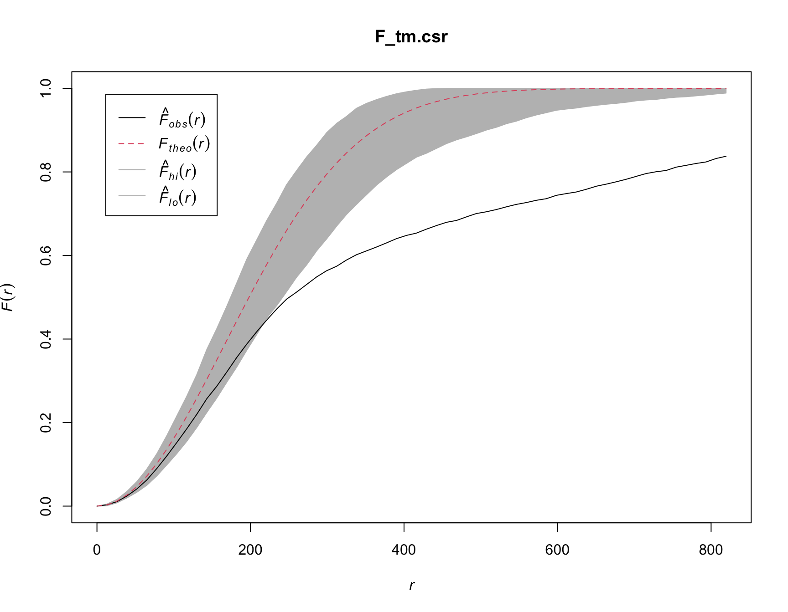
4.3 The K function
Ripley’s K is the expected number of other points within distance r, standardised by intensity. It summarises dependence across all distances, not just nearest neighbours. Under CSR, K(r) = πr². The plot below uses the variance-stabilised form K(r) − πr² so the CSR baseline is the horizontal line at zero.
K_ck <- Kest(childcare_ck_ppp, correction = "Ripley")
plot(K_ck, . - r ~ r, ylab = "K(d) - r", xlab = "d (m)")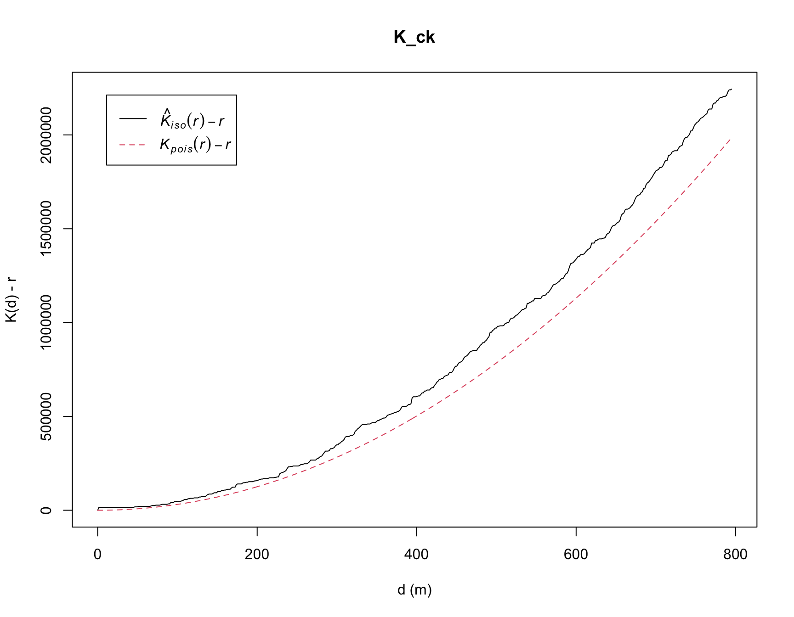
K_ck.csr <- envelope(childcare_ck_ppp, Kest, nsim = 99, rank = 1, glocal = TRUE)Generating 99 simulated realisations of CSR ...
1, 2, 3, 4, 5, 6, 7, 8, 9, 10, 11, 12, 13, 14, 15, 16, 17, 18, 19, 20,
21, 22, 23, 24, 25, 26, 27, 28, 29, 30, 31, 32, 33, 34, 35, 36, 37, 38, 39, 40,
41, 42, 43, 44, 45, 46, 47, 48, 49, 50, 51, 52, 53, 54, 55, 56, 57, 58, 59, 60,
61, 62, 63, 64, 65, 66, 67, 68, 69, 70, 71, 72, 73, 74, 75, 76, 77, 78, 79, 80,
81, 82, 83, 84, 85, 86, 87, 88, 89, 90, 91, 92, 93, 94, 95, 96, 97, 98,
99.
Done.plot(K_ck.csr, . - r ~ r, xlab = "d", ylab = "K(d) - r")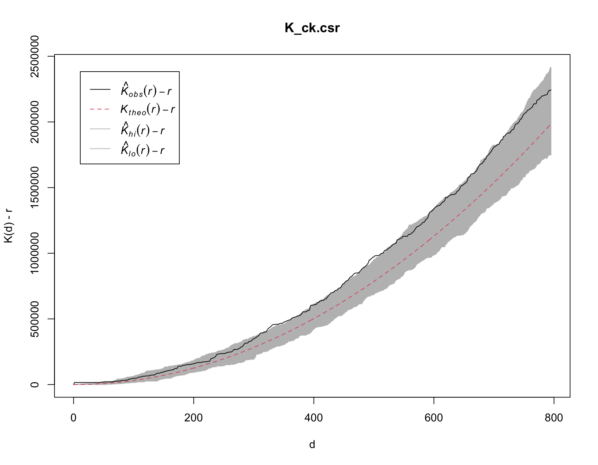
K_tm <- Kest(childcare_tm_ppp, correction = "Ripley")
K_tm.csr <- envelope(childcare_tm_ppp, Kest, nsim = 99, rank = 1, glocal = TRUE)Generating 99 simulated realisations of CSR ...
1, 2, 3, 4, 5, 6, 7, 8, 9, 10, 11, 12, 13, 14, 15, 16, 17, 18, 19, 20,
21, 22, 23, 24, 25, 26, 27, 28, 29, 30, 31, 32, 33, 34, 35, 36, 37, 38, 39, 40,
41, 42, 43, 44, 45, 46, 47, 48, 49, 50, 51, 52, 53, 54, 55, 56, 57, 58, 59, 60,
61, 62, 63, 64, 65, 66, 67, 68, 69, 70, 71, 72, 73, 74, 75, 76, 77, 78, 79, 80,
81, 82, 83, 84, 85, 86, 87, 88, 89, 90, 91, 92, 93, 94, 95, 96, 97, 98,
99.
Done.plot(K_tm.csr, . - r ~ r, xlab = "d", ylab = "K(d) - r", xlim = c(0, 500))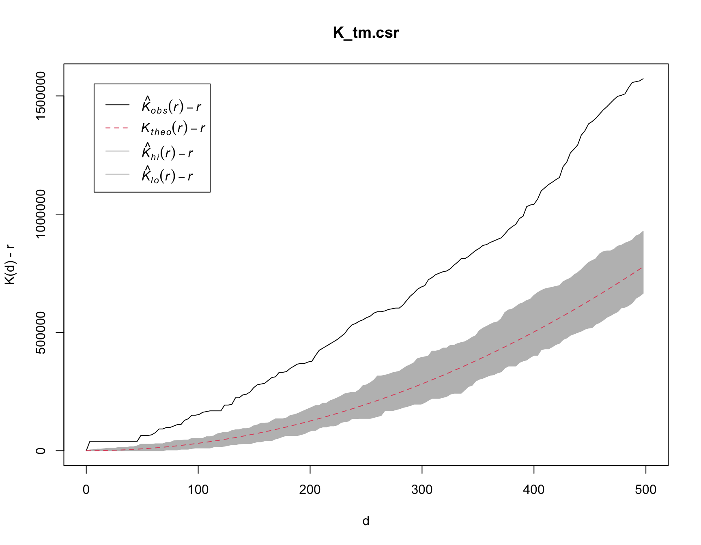
4.4 The L function
The L function is the variance-stabilised transform of K: L(r) = √(K(r)/π) − r. Under CSR, L(r) = 0 at all distances. Positive L indicates clustering; negative L indicates regularity. The transform makes deviations from CSR easier to read at all scales.
L_ck.csr <- envelope(childcare_ck_ppp, Lest, nsim = 99, rank = 1, glocal = TRUE)Generating 99 simulated realisations of CSR ...
1, 2, 3, 4, 5, 6, 7, 8, 9, 10, 11, 12, 13, 14, 15, 16, 17, 18, 19, 20,
21, 22, 23, 24, 25, 26, 27, 28, 29, 30, 31, 32, 33, 34, 35, 36, 37, 38, 39, 40,
41, 42, 43, 44, 45, 46, 47, 48, 49, 50, 51, 52, 53, 54, 55, 56, 57, 58, 59, 60,
61, 62, 63, 64, 65, 66, 67, 68, 69, 70, 71, 72, 73, 74, 75, 76, 77, 78, 79, 80,
81, 82, 83, 84, 85, 86, 87, 88, 89, 90, 91, 92, 93, 94, 95, 96, 97, 98,
99.
Done.plot(L_ck.csr, . - r ~ r, xlab = "d", ylab = "L(d) - r")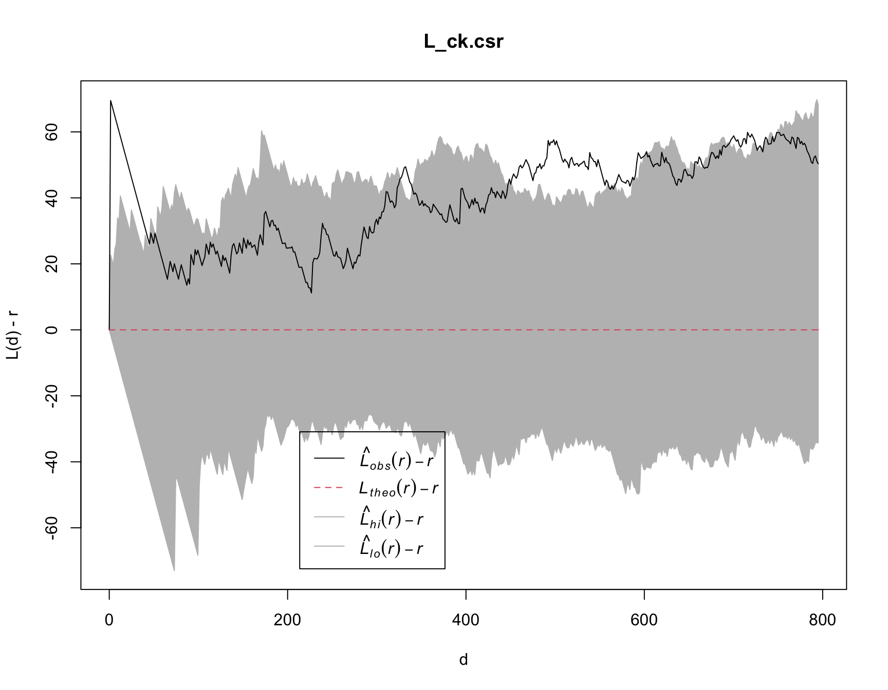
L_tm.csr <- envelope(childcare_tm_ppp, Lest, nsim = 99, rank = 1, glocal = TRUE)Generating 99 simulated realisations of CSR ...
1, 2, 3, 4, 5, 6, 7, 8, 9, 10, 11, 12, 13, 14, 15, 16, 17, 18, 19, 20,
21, 22, 23, 24, 25, 26, 27, 28, 29, 30, 31, 32, 33, 34, 35, 36, 37, 38, 39, 40,
41, 42, 43, 44, 45, 46, 47, 48, 49, 50, 51, 52, 53, 54, 55, 56, 57, 58, 59, 60,
61, 62, 63, 64, 65, 66, 67, 68, 69, 70, 71, 72, 73, 74, 75, 76, 77, 78, 79, 80,
81, 82, 83, 84, 85, 86, 87, 88, 89, 90, 91, 92, 93, 94, 95, 96, 97, 98,
99.
Done.plot(L_tm.csr, . - r ~ r, xlab = "d", ylab = "L(d) - r", xlim = c(0, 500))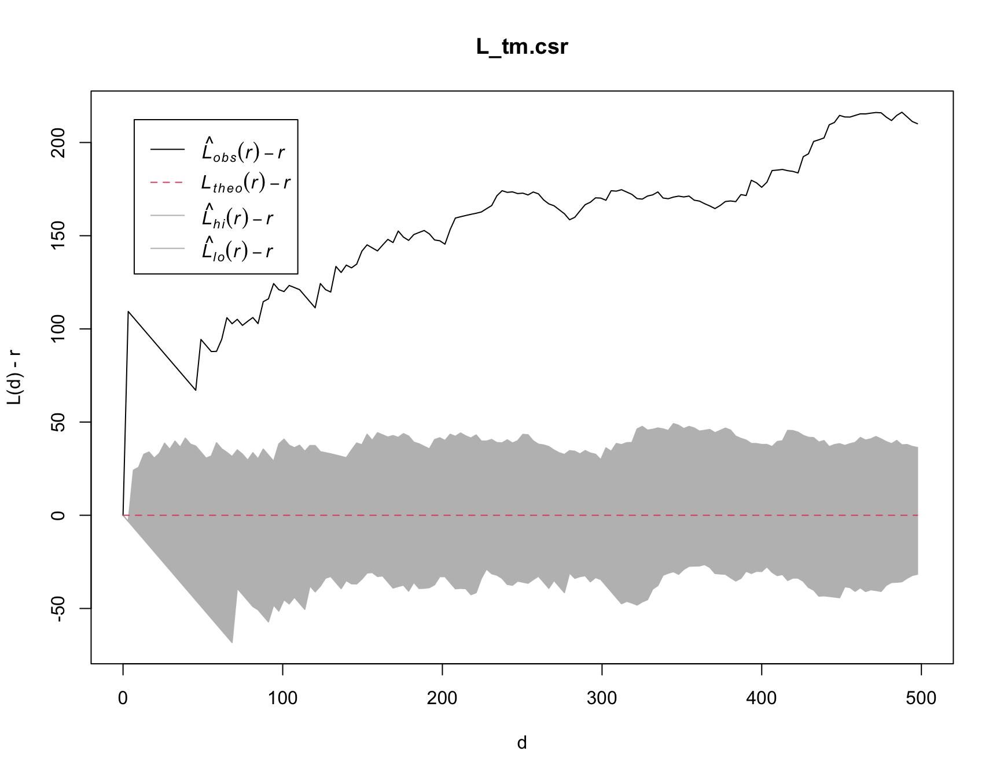
5 Part 3: Beyond the chapters
The reproduction above is the assignment. This part records what I noticed while working through it: which choices the chapters let the software make silently, whether the conclusions survive when those choices are changed, and what changes when the week’s readings and slides are actually applied rather than read. The sections follow that order.
5.1 Reviewing the chapters’ choices
5.1.1 Checking for coincident points
This is a prerequisite rather than a criticism, and it belongs before any of the distance methods run. Baddeley, Rubak and Turner (2015), listed in the Lesson 2 references and written by the authors of spatstat, set out why in section 3.4.4:
Duplication of points is important, because statistical methodology for spatial point processes (as used in this book) is based largely on assumption that processes are simple, i.e. that points of the process can never be coincident. When the data have coincident points, some statistical procedures designed for simple point processes will be severely affected. For example, the pair correlation function will have an infinite value at distance zero. It is strongly advisable to check for duplicated points and to decide on a strategy for dealing with them if they are present.
Coincident points are plausible for this data, since several childcare centres can operate in the same mall or HDB block and geocoding would return one coordinate for all of them. So the check is worth running rather than assuming.
c(points = npoints(childcareSG_ppp),
unique_locations = npoints(unique(childcareSG_ppp)),
duplicated = sum(duplicated(childcareSG_ppp)),
nn_distances_of_zero = sum(nndist(childcareSG_ppp) == 0)) points unique_locations duplicated
1925 1925 0
nn_distances_of_zero
338 This layer is clean: every centre has its own coordinate, no nearest-neighbour distance is zero, and the pair correlation function used later in Part 3 is safe to run. Nothing needs fixing here, but that is only knowable after running the check.
It is worth knowing what a failure here would look like, because I met one. An earlier draft of this exercise used a different geocoded childcare file, CHILDCARE.shp, distributed with a later chapter of the same book. That version had 174 duplicated coordinates, including one location carrying 25 centres, and it changed results: the Clark-Evans index read 0.495 instead of 0.494, and the adaptive-bandwidth surface in Part 1 peaked at 314 centres per square kilometre instead of about 47, because an adaptive kernel shrinks its bandwidth wherever intensity is high and a 25-point stack drives that bandwidth towards zero. The resulting map was almost entirely dark, since the colour ramp stretched to a maximum reached by a dozen pixels. Fixed-bandwidth KDE was unaffected, because it spreads every point over the same radius regardless of how many neighbours it has.
5.1.2 A clipregion argument that does nothing
A smaller one. The chapter calls the Clark-Evans test like this:
clarkevans.test(childcareSG_ppp, correction = "none",
clipregion = "sg_owin", alternative = c("clustered"))clipregion is passed the string "sg_owin" rather than the object sg_owin. It reads as though the test is being clipped to the Singapore boundary. It is not: the argument is only used by the guard-area correction, and with correction = "none" it is ignored entirely. Passing the object, passing the string, or omitting the argument all return R = 0.49444. The line is harmless but misleading, and I dropped the quotes in Part 1.
5.1.3 The envelopes are pointwise, and one argument does not exist
Chapter 5 builds the K and L envelopes like this:
K_ck.csr <- envelope(childcare_ck_ppp, Kest, nsim = 99, rank = 1, glocal = TRUE)glocal is not an argument of envelope(). The argument that controls this behaviour is called global, so glocal = TRUE is absorbed by ..., passed down to Kest, and ignored. The envelopes come out pointwise, which is the default, and identical to what you get by leaving the argument out.
set.seed(1)
e_default <- envelope(childcare_ck_ppp, Lest, nsim = 99, verbose = FALSE)
set.seed(1)
e_glocal <- envelope(childcare_ck_ppp, Lest, nsim = 99, glocal = TRUE, verbose = FALSE)
set.seed(1)
e_global <- envelope(childcare_ck_ppp, Lest, nsim = 99, global = TRUE, verbose = FALSE)
c(glocal_same_as_default = identical(e_glocal$hi, e_default$hi),
global_same_as_default = identical(e_global$hi, e_default$hi))glocal_same_as_default global_same_as_default
TRUE FALSE The distinction matters, and it is the difference between two questions.
A pointwise envelope is built separately at each distance r. At any single r it has the stated error rate, but the plot shows hundreds of distances at once, so the chance that the observed curve strays outside somewhere is far higher than the nominal level. Reading a pointwise band as though a single excursion proves clustering is the multiple-comparison problem in graphical form.
A global envelope is built from the largest deviation each simulated curve reaches anywhere in the range, so the band is wider and one excursion anywhere is enough to reject at the stated level.
i <- round(length(e_default$r) / 2)
data.frame(
envelope = c("pointwise", "global"),
lo = round(c(e_default$lo[i], e_global$lo[i]), 1),
hi = round(c(e_default$hi[i], e_global$hi[i]), 1),
frac_r_outside = round(c(mean(e_default$obs > e_default$hi | e_default$obs < e_default$lo),
mean(e_global$obs > e_global$hi | e_global$obs < e_global$lo)), 3)
) envelope lo hi frac_r_outside
1 pointwise 359.8 447.9 0.431
2 global 333.8 458.0 0.010For Choa Chu Kang’s L function the pointwise band puts about 43% of the distance range outside the envelope, and the global band about 1%. Same data, same simulations, different question.
Because of this I report the second-order results below as a yes-or-no answer under a global envelope, rather than as a percentage of the range under a pointwise one. The percentage is useful for describing where along the distance axis a departure sits, but it is not a significance level and should not be read as one.
One practical detail: the pair correlation function is undefined at r = 0 and returns Inf there, which a global envelope will always flag. Every test below is evaluated over r > 0 with non-finite values dropped.
5.1.4 Choosing the study window
Every first-order and second-order statistic is computed inside a window, so the window you choose changes the numbers you get. Three things I noticed:
The national window follows the coastline.
as.owin(sg_boundary)produces an irregular polygon. The nearest-neighbour distances near the coast are truncated by the boundary, which biases R upward (points appear more dispersed than they are) unless an edge correction is applied.clarkevans.testwithcorrection = "none"makes no allowance for this.The national Clark–Evans index answers a question I did not mean to ask. R = 0.49 confirms clustering, but childcare supply follows population, and population in Singapore is itself clustered. A nearest-neighbour test against uniform CSR asks the wrong question when the points track an underlying covariate. The same weakness affects the second-order tests in Part 2.
The window changes how strong the result looks. Clark-Evans compares the observed mean nearest-neighbour distance with the distance expected under CSR, and that expected distance depends on the area of the window through the intensity n/A. Enlarge the window without adding points and CSR expects the points to be further apart, so the same points look more clustered by comparison.
The test below holds the 74 Choa Chu Kang centres fixed and only changes the window.
ck_pts <- childcare_ck_ppp
windows <- list(
`planning-area polygon` = as.owin(st_union(ck)),
`polygon + 500 m buffer` = as.owin(st_buffer(st_union(ck), 500)),
`convex hull of points` = convexhull.xy(ck_pts$x, ck_pts$y),
`bounding box` = owin(range(ck_pts$x), range(ck_pts$y))
)
do.call(rbind, lapply(names(windows), function(nm) {
w <- windows[[nm]]
Y <- suppressWarnings(ppp(ck_pts$x, ck_pts$y, window = w))
t <- suppressWarnings(clarkevans.test(Y, correction = "none",
alternative = "two.sided", nsim = 999))
data.frame(window = nm, area_km2 = round(spatstat.geom::area(w) / 1e6, 2),
R = round(unname(t$statistic), 3), p = round(t$p.value, 3))
})) window area_km2 R p
1 planning-area polygon 6.12 0.841 0.009
2 polygon + 500 m buffer 12.60 0.586 0.000
3 convex hull of points 5.79 0.865 0.026
4 bounding box 9.03 0.692 0.000All four windows agree that the pattern is clustered, which is reassuring, but they do not agree on how strongly. R ranges from 0.87 under the convex hull to 0.59 under the buffered polygon, and the p-value moves from 0.026 to below 0.001. Nothing changed but the outline I drew around the same 74 centres. A result reported as “R = 0.87, p = 0.03” and one reported as “R = 0.59, p < 0.001” would be written up quite differently, even though they describe the same centres. Wartman and Malasavage’s insistence that “the study area should be determined objectively, rather than arbitrarily” is doing real work here, and neither chapter mentions the issue.
O’Sullivan and Unwin explain the mechanism behind the buffered case: edge effects arise because “sites in the center of the study area can have nearby observations in all directions, whereas sites at the edges only have neighbors toward the center”. Padding the window adds empty space full of edge, which is why R falls furthest there.
Two of the applied papers sit usefully side by side here. Borruso and Porceddu write that the bandwidth “represents the only arbitrary variable which defines the extent of the searching function”, while Wartman and Malasavage insist that “the study area should be determined objectively, rather than arbitrarily”. Borruso’s sentence is about the KDE kernel, so the table above is not a counter-example to it. But his paper never treats the study area as a choice at all, and on this data the study area is what moved the verdict, with no bandwidth involved. Following Borruso alone, an analyst would carefully document the one parameter he names and say nothing about the one that mattered.
5.1.5 How much the bandwidth choice matters
Yin (2020), one of the week’s core readings, frames KDE as a bias-variance trade-off: too small a bandwidth produces a noisy surface that overfits the sample, too large a bandwidth smooths away the structure we are looking for. The four automatic selectors sit at different points on that trade-off, and on this data they are far apart.
| Selector | Bandwidth (km) | What it optimises |
|---|---|---|
bw.diggle |
0.30 | Edge-corrected minimisation of mean-square error (the book’s default) |
bw.ppl |
0.39 | Likelihood cross-validation, driven by the data rather than a formula |
bw.scott |
2.16 / 1.40 (x / y) | A rule of thumb based on the pattern’s own spread |
bw.CvL |
4.54 | Coarser smoothing, low variance, high bias |
The spread is more than tenfold. Since the chapters pick one without saying why, the question is how much of the map depends on that choice, so I re-ran the national surface under the two extremes alongside the default.
kde_ppl <- density(childcareSG_ppp_km, sigma = bw.ppl, edge = TRUE)
kde_cvl <- density(childcareSG_ppp_km, sigma = bw.CvL, edge = TRUE)par(mfrow = c(1, 3))
plot(kde_childcareSG_km, main = "bw.diggle")
plot(kde_ppl, main = "bw.ppl")
plot(kde_cvl, main = "bw.CvL")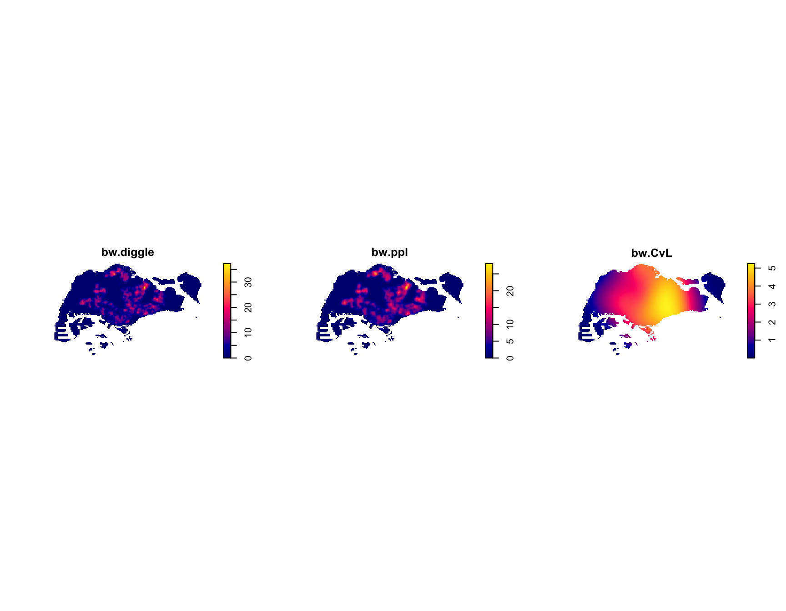
par(mfrow = c(1, 1))The broad pattern is stable across all three: the same dense central-east corridor, the same relative voids in the north. What changes is the granularity. The two small bandwidths break the surface into many separate peaks, while bw.CvL merges them into a few large blobs. So the statement “childcare is concentrated in the central and eastern regions” is robust, but any claim about a particular hotspot is a claim about the bandwidth as much as about the data.
The trade-off can be measured rather than eyeballed. The coefficient of variation of the density values says how uneven each surface is.
cv_im <- function(x) { v <- as.vector(x$v); v <- v[!is.na(v)]; sd(v) / mean(v) }
c(`bw.ppl` = cv_im(kde_ppl), `bw.diggle` = cv_im(kde_childcareSG_km), `bw.CvL` = cv_im(kde_cvl)) bw.ppl bw.diggle bw.CvL
1.5432064 1.6760748 0.6119746 The ordering follows the bandwidths rather than the reputations of the methods. bw.diggle returns the smallest bandwidth here at 0.30 km and gives the most uneven surface, bw.ppl at 0.39 km is close behind, and bw.CvL at 4.54 km is far smoother than either. The book’s default therefore sits at the variance-heavy end of the range on this data rather than in the middle, which is the opposite of what I assumed before measuring it.
5.1.6 A unit mismatch in the KDE map
The chapters build the KDE map by rescaling the point pattern to kilometres, converting the result to a raster, and then assigning the raster the CRS EPSG:3414, which is a metre projection. The raster’s extent (about 0–55 in km units) is then interpreted by tmap as 0–55 metres. The rendered map is a sliver of the coastline about fifty metres wide, not the country, even though the density surface is correct.
The fix used for the KDE map in Part 1 is to compute the density on the metre-based pattern, so the raster extent is genuinely in metres and the CRS assignment is honest, then rescale only the values by 10⁶ for a per-km² legend. The change is small, and the map then shows Singapore properly.
What makes this one instructive is that nothing failed. The code ran without error and produced a map that looked reasonable at a glance. I only caught it by reading the graticule labels, which spanned about a hundredth of a degree.
5.1.7 Why adaptive suits this data
The default density() uses a fixed bandwidth: every point spreads its influence to the same radius. Adaptive bandwidth (adaptive.density) lets the radius shrink where points are dense. For childcare, whose supply tracks population density, adaptive is the more defensible assumption: a centre in a dense town competes with neighbours close by, while one in a sparse area stands alone.
In the comparison plotted in Part 1, the fixed surface smooths the dense corridor into one continuous mass while the adaptive surface keeps more local structure. Which one is preferable depends on what you are asking, so the choice should be stated rather than left at the default.
5.1.8 Do the functions agree?
All four functions describe the same underlying dependence from different angles, so reading them against each other is a way of checking that a result is not an artefact of one particular statistic:
- G and K/L both detect clustering in both planning areas, with the observed curves sitting above the CSR band at short distances.
- F rarely leaves its band. F is computed from arbitrary locations, so it reflects the average empty-space structure. With only 74 and 117 points in these two areas, F is blunt; it contributes little beyond confirming there is no large-scale regularity.
- K and L give the cleaner contrast between the two towns. G looks only at each point’s nearest neighbour and is sensitive to the border correction, while K and L average over all pairs. That stability comes from accumulating counts across distances, which is an advantage here and a liability later: the section on nulls below shows the same accumulation producing a signal that turns out not to be there.
5.1.9 Why the two towns differ
Both towns show clustering at short distances, but Tampines is more strongly clustered, with its K/L curves rising higher above the band.
The likely explanation is the housing. Tampines is one of the earliest and densest new towns, built around a tight commercial centre with residential blocks close by, while Choa Chu Kang is younger and more spread out. Childcare centres locate near homes, so the arrangement of the centres largely follows the arrangement of the flats. That explanation comes from knowing the towns, not from the curves.
5.2 Applying the week’s material
I have already used two of the readings above: Yin (2020) for the bandwidth comparison, and Yuan et al. (2020) for the argument that CSR is the wrong null when points follow population. The two methods below come from material outside r4gdsa Chapters 4 and 5. Quadrat analysis is covered in the Lesson 2 slides and in Anselin’s Point Pattern Analysis: Quadrat Counts. The inhomogeneous null then tests Yuan’s warning, which is that CSR treats every location as equally likely to hold a centre, so any service that follows the population will be reported as clustered whether or not the centres have anything to do with each other.
5.2.1 Quadrat analysis
Neither r4gdsa Chapter 4 nor Chapter 5 covers quadrat analysis, but the Lesson 2 slides and Anselin’s Point Pattern Analysis: Quadrat Counts both do, so I have added it here as a third first-order method. It is the oldest of them. You divide the study area into a grid, count the points in each cell, and compare those counts with what CSR would produce. Quadrat analysis adds a different kind of evidence from Clark-Evans, which measures distances between centres. Quadrat analysis ignores distance entirely and looks only at how counts vary between cells, so if the two agree, the finding does not depend on either way of measuring.
qc <- quadratcount(childcareSG_ppp_km, nx = 6, ny = 6)qctile
Tile row 1, col 1 Tile row 1, col 2 Tile row 1, col 3 Tile row 1, col 4
0 0 238 8
Tile row 1, col 5 Tile row 1, col 6 Tile row 2, col 1 Tile row 2, col 2
0 0 0 95
Tile row 2, col 3 Tile row 2, col 4 Tile row 2, col 5 Tile row 2, col 6
88 274 48 0
Tile row 3, col 1 Tile row 3, col 2 Tile row 3, col 3 Tile row 3, col 4
0 227 135 277
Tile row 3, col 5 Tile row 3, col 6 Tile row 4, col 1 Tile row 4, col 2
183 0 0 15
Tile row 4, col 3 Tile row 4, col 4 Tile row 4, col 5 Tile row 4, col 6
197 127 9 0
Tile row 5, col 1 Tile row 5, col 2 Tile row 5, col 3 Tile row 5, col 4
0 0 4 0
Tile row 6, col 1 Tile row 6, col 2 Tile row 6, col 3
0 0 0 The slides give the reading rule through the variance-mean ratio. Under CSR the counts follow a Poisson distribution, whose variance equals its mean, so VMR ≈ 1 is random, VMR > 1 is clustered and VMR < 1 is regular.
counts <- as.vector(qc)
c(variance = var(counts), mean = mean(counts), VMR = var(counts) / mean(counts)) variance mean VMR
8885.09032 62.09677 143.08457 quadrat.test(childcareSG_ppp_km, nx = 6, ny = 6)
Chi-squared test of CSR using quadrat counts
data: childcareSG_ppp_km
X2 = 1388.7, df = 30, p-value < 2.2e-16
alternative hypothesis: two.sided
Quadrats: 31 tiles (irregular windows)The chi-square test is unambiguous: X² = 1389 on 30 degrees of freedom, p < 2.2e-16, the same strong clustering Clark-Evans found. The raw VMR of 143 is also far above 1, but it is inflated and should not be reported on its own. The count grid inherits the coastline, so several edge tiles straddle land and sea and sit near zero, while the busiest central tile holds 277 centres.
This is the one method in the exercise where the modifiable areal unit problem applies in its strict sense, because it is the only one that aggregates points into areal units before computing anything. O’Sullivan and Unwin describe MAUP as the problem that “the aggregation units used are arbitrary with respect to the phenomena under investigation, yet the units used will affect statistics determined on the basis of data reported in this way”.
A 6 by 6 grid is exactly such an arbitrary unit. Change nx and ny, or shift the grid origin, and the counts, the VMR and the chi-square statistic all move. That sensitivity, which the Lesson 2 slides list among the weaknesses of quadrat analysis, is why the field moved to distance-based methods.
So quadrat analysis agrees with Clark-Evans that the pattern is clustered, which is reassuring, but its headline number depends on a grid I chose arbitrarily. That dependence is the reason later methods measure distances between points instead of counts inside cells.
5.2.2 Two functions the chapters leave out
r4gdsa Chapters 4 and 5 stop at G, F, K and L. Two of the other references go further, and both additions turned out to matter.
Anselin’s Point Pattern Analysis: F and J Functions introduces the J function, which combines the two curves already computed: J(r) = (1 - G(r)) / (1 - F(r)). Under CSR it is flat at 1, below 1 means clustering and above 1 means inhibition. It is a tidier answer to the question I asked earlier about whether G and F agree, since it combines them arithmetically instead of leaving me to compare two plots by eye.
Chapter 11 Point Pattern Analysis of Intro to GIS and Spatial Analysis, listed in the references, makes a second point. K and L are cumulative: they count every point within distance r, so clustering at short range keeps inflating the curve at longer ranges. The pair correlation function counts only points in a narrow band at r, so each distance is judged on its own.
WarningTwo different functions, one letter
The pair correlation function is written lowercase g(r), and it is not the G-function from the lesson slides and Chapter 5. They are unrelated:
- G(r),
Gest(), is the cumulative distribution of nearest-neighbour distances, so it uses one distance per point and says nothing about what lies further away. - g(r),
pcf(), is derived from Ripley’s K by differentiating it, so it uses all pairs of points and reports the density of pairs at each separation.
Gimond introduces g in section 11.3.3 as a modification of K, not of G, which is the clearest way to keep them apart. To avoid the collision in code I have named the objects pcf_* rather than g_*, since Part 2 already uses G_ck and G_tm for the G-function.
childcare_tm_ppp_km <- rescale.ppp(childcare_tm_ppp, 1000, "km")
childcare_ck_ppp_km <- rescale.ppp(childcare_ck_ppp, 1000, "km")
set.seed(42)
J_tm <- envelope(childcare_tm_ppp_km, Jest, nsim = 99, verbose = FALSE)
pcf_tm <- envelope(childcare_tm_ppp_km, pcf, nsim = 99, verbose = FALSE)
J_ck <- envelope(childcare_ck_ppp_km, Jest, nsim = 99, verbose = FALSE)
pcf_ck <- envelope(childcare_ck_ppp_km, pcf, nsim = 99, verbose = FALSE)par(mfrow = c(1, 2))
plot(J_tm, main = "J function: Tampines", legend = FALSE)
plot(pcf_tm, main = "Pair correlation g: Tampines", legend = FALSE)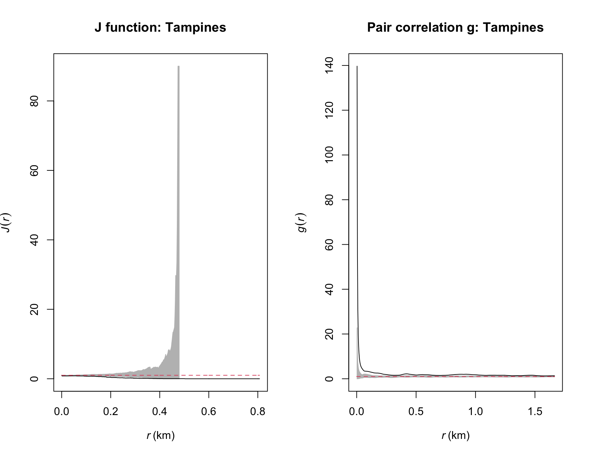
par(mfrow = c(1, 1))outside <- function(env, side = c("above", "below")) {
side <- match.arg(side)
if (side == "above") mean(env$obs > env$hi, na.rm = TRUE)
else mean(env$obs < env$lo, na.rm = TRUE)
}
data.frame(
town = c("Tampines", "Choa Chu Kang"),
J_clustered = c(outside(J_tm, "below"), outside(J_ck, "below")),
g_clustered = c(outside(pcf_tm, "above"), outside(pcf_ck, "above"))
) town J_clustered g_clustered
1 Tampines 0.7704918 0.98437500
2 Choa Chu Kang 0.2042254 0.06835938Those percentages are pointwise, so they describe where along the distance axis each curve leaves its band, not whether the departure is significant overall. The section on envelopes above explains why. Repeating both tests under a global envelope, over r > 0, gives the answer that can actually be reported:
exits <- function(e) {
k <- is.finite(e$obs) & e$r > 0
any(e$obs[k] > e$hi[k] | e$obs[k] < e$lo[k], na.rm = TRUE)
}
glob <- function(X, fun, ...) { set.seed(42)
envelope(X, fun, nsim = 99, global = TRUE, verbose = FALSE, ...) }
data.frame(
town = c("Tampines", "Choa Chu Kang"),
J_global = c(exits(glob(childcare_tm_ppp_km, Jest)),
exits(glob(childcare_ck_ppp_km, Jest))),
pcf_global = c(exits(glob(childcare_tm_ppp_km, pcf)),
exits(glob(childcare_ck_ppp_km, pcf)))
) town J_global pcf_global
1 Tampines FALSE TRUE
2 Choa Chu Kang FALSE TRUEThe two functions part company. The pair correlation function rejects CSR for both towns under the stricter test, so the clustering it reports is not an artefact of scanning many distances. The J function does not reject for either town, even though its pointwise band was left over 77% of the range in Tampines. J is built from G and F, both of which are cumulative nearest-neighbour constructions, and its deviations are correspondingly small and spread out rather than concentrated. Under a band sized for the whole curve, they no longer stand out.
So on the CSR comparison I would report the pair correlation result and treat the J result as suggestive only. Under CSR, Tampines is clustered on both pointwise measures, with J outside its band over about 77% of the range and g over 98%, while Choa Chu Kang is much weaker at roughly 20% and 7%.
Clark-Evans reports both towns as significantly clustered, at R = 0.67 for Tampines and R = 0.84 for Choa Chu Kang, and stops there. What the distance-resolved functions add is that the two are clustered in different ways. Tampines departs from randomness at nearly every distance, while Choa Chu Kang does so only over a narrow band. A single nearest-neighbour index cannot express that difference, because it collapses the whole pattern into one number before distance enters the picture.
The non-cumulative view matters again in the next section, where it changes a conclusion I had already written down.
5.2.3 Choosing a null hypothesis
Everything in Part 2 was tested against Complete Spatial Randomness, which assumes a centre was equally likely to open anywhere in the town. For a service that follows families, that assumption is close to guaranteed to report clustering. This section builds two better nulls and then sets out what neither of them can settle.
5.2.3.1 A null estimated from the pattern itself
Yuan et al. (2020) warn that CSR is a weak null for events that track covariates. The warning is testable directly. The homogeneous L-function in Part 2 compares the observed pattern with a completely random one, which is loaded here: if childcare follows population density, the intensity gradient is counted as clustering. The inhomogeneous L-function removes the trend first. It estimates the intensity (here, the KDE surface) and tests the pattern against an inhomogeneous Poisson process with that intensity, so any clustering that survives is interaction between points that the trend cannot explain.
set.seed(42) # envelope simulations are random; fix the seed so the results are reproducible
lambda_tm <- density(childcare_tm_ppp_km, sigma = bw.diggle, edge = TRUE)
lambda_tm$v <- pmax(lambda_tm$v, 0.01) # Linhom needs strictly positive intensity
L_tm_inhom <- envelope(childcare_tm_ppp_km, Linhom, lambda = lambda_tm,
nsim = 99, correction = "Ripley")Generating 99 simulated realisations of CSR ...
1, 2, 3, 4, 5, 6, 7, 8, 9, 10, 11, 12, 13, 14, 15, 16, 17, 18, 19, 20,
21, 22, 23, 24, 25, 26, 27, 28, 29, 30, 31, 32, 33, 34, 35, 36, 37, 38, 39, 40,
41, 42, 43, 44, 45, 46, 47, 48, 49, 50, 51, 52, 53, 54, 55, 56, 57, 58, 59, 60,
61, 62, 63, 64, 65, 66, 67, 68, 69, 70, 71, 72, 73, 74, 75, 76, 77, 78, 79, 80,
81, 82, 83, 84, 85, 86, 87, 88, 89, 90, 91, 92, 93, 94, 95, 96, 97, 98,
99.
Done.plot(L_tm_inhom, . - r ~ r, main = "Inhomogeneous L: Tampines")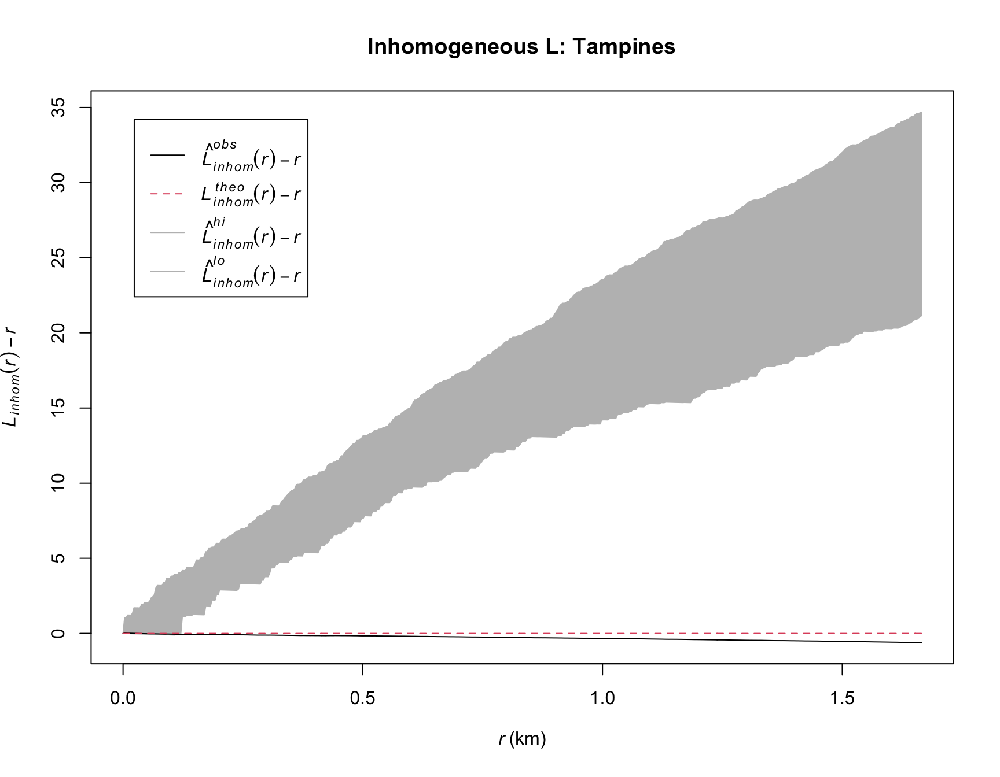
lambda_ck <- density(childcare_ck_ppp_km, sigma = bw.diggle, edge = TRUE)
lambda_ck$v <- pmax(lambda_ck$v, 0.01)
L_ck_inhom <- envelope(childcare_ck_ppp_km, Linhom, lambda = lambda_ck,
nsim = 99, correction = "Ripley")Generating 99 simulated realisations of CSR ...
1, 2, 3, 4, 5, 6, 7, 8, 9, 10, 11, 12, 13, 14, 15, 16, 17, 18, 19, 20,
21, 22, 23, 24, 25, 26, 27, 28, 29, 30, 31, 32, 33, 34, 35, 36, 37, 38, 39, 40,
41, 42, 43, 44, 45, 46, 47, 48, 49, 50, 51, 52, 53, 54, 55, 56, 57, 58, 59, 60,
61, 62, 63, 64, 65, 66, 67, 68, 69, 70, 71, 72, 73, 74, 75, 76, 77, 78, 79, 80,
81, 82, 83, 84, 85, 86, 87, 88, 89, 90, 91, 92, 93, 94, 95, 96, 97, 98,
99.
Done.plot(L_ck_inhom, . - r ~ r, main = "Inhomogeneous L: Choa Chu Kang")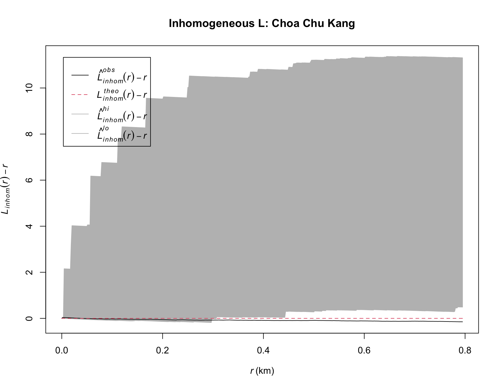
A coarse summary of where the observed curve sits relative to the envelope makes the difference easy to read.
frac_band <- function(env) c(above = mean(env$obs > env$hi, na.rm = TRUE),
below = mean(env$obs < env$lo, na.rm = TRUE))
list(Tampines = frac_band(L_tm_inhom),
`Choa Chu Kang` = frac_band(L_ck_inhom))$Tampines
above below
0.0000000 0.9259259
$`Choa Chu Kang`
above below
0.003898635 0.625730994 Under the homogeneous test, both towns look strongly clustered. Under the inhomogeneous null the picture changes, and the two towns differ. For Tampines the observed curve sits below the envelope for most of the plotted range (about 92% of it), which is the signature of regularity, not clustering: once the density of centres is accounted for, centres are further apart than the trend predicts. For Choa Chu Kang the curve hovers at or below the envelope (about 49% of the range below it, essentially none above), so the clustering the homogeneous test reported for this town was almost entirely the intensity trend, with no clear residual signal left.
Both results line up with Yuan’s warning: a homogeneous null will overstate clustering for any service that follows population.
The Tampines curve sitting below the envelope looks like regularity, and my first reading of it was that centres compete and space themselves out. That reading was wrong, and the pair correlation function from the previous section is what shows it. L is cumulative, so a small deviation repeated across short distances accumulates into a curve that drifts below the band without any single distance being unusual. Running the same null through the non-cumulative pcfinhom removes that accumulation.
set.seed(42)
pcfi_tm <- envelope(childcare_tm_ppp_km, pcfinhom, lambda = lambda_tm,
nsim = 99, verbose = FALSE)
pcfi_ck <- envelope(childcare_ck_ppp_km, pcfinhom, lambda = lambda_ck,
nsim = 99, verbose = FALSE)par(mfrow = c(1, 2))
plot(pcfi_tm, main = "Inhomogeneous g: Tampines", legend = FALSE)
plot(pcfi_ck, main = "Inhomogeneous g: Choa Chu Kang", legend = FALSE)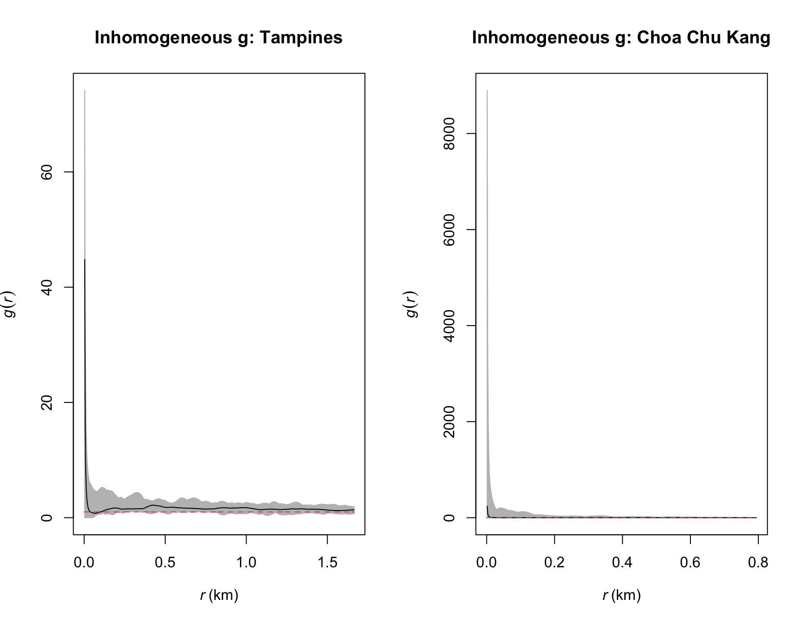
par(mfrow = c(1, 1))data.frame(
town = c("Tampines", "Choa Chu Kang"),
g_inhom_outside_envelope = c(outside(pcfi_tm, "above") + outside(pcfi_tm, "below"),
outside(pcfi_ck, "above") + outside(pcfi_ck, "below"))
) town g_inhom_outside_envelope
1 Tampines 0
2 Choa Chu Kang 0The inhomogeneous g never leaves its envelope for either town at any distance. So the regularity I thought I had found was an artefact of L accumulating, not a property of the centres. Once the intensity trend is accounted for, there is no detectable interaction between childcare centres at any distance.
The direction of the correction is worth being clear about. A global band is wider, which makes it harder to reject the null and easier to stay inside. So for a result that rejects, like the pair correlation test above, the global version is the stricter test. For a result that finds nothing, like this one, the narrower pointwise band was already the harder test to pass, and the global check below is a formality. I ran it so both conclusions are reported on the same footing.
data.frame(
town = c("Tampines", "Choa Chu Kang"),
pcfinhom_global_exits = c(exits(glob(childcare_tm_ppp_km, pcfinhom, lambda = lambda_tm)),
exits(glob(childcare_ck_ppp_km, pcfinhom, lambda = lambda_ck)))
) town pcfinhom_global_exits
1 Tampines FALSE
2 Choa Chu Kang FALSENeither town’s curve leaves the wider band either, as expected. The absence of residual interaction therefore does not depend on which envelope is used, unlike the J result above.
Neither r4gdsa chapter uses a non-cumulative function, so this correction is not available from them.
5.2.3.2 A null built from resident population
The inhomogeneous tests above have a circularity in them, which I set out in the section below: the intensity was estimated from a kernel density of the very points being tested, so genuine clustering could be absorbed into the “trend” before the test runs. Floch et al. say what the fix is, namely “a model that links a covariable to the intensity”. The covariable for childcare is obvious and I already have it, since Hands-on Exercise 1 used the same census table: resident children aged 0 to 4 by subzone.
pop_sz <- read_csv("../Hands-on_Ex01/data/aspatial/respop_census2020_agesex.csv",
show_col_types = FALSE) |>
filter(!grepl("Total", Number)) |>
transmute(SUBZONE_N = toupper(Number),
kids = suppressWarnings(as.numeric(Total_0_4)))
mpsz_pop <- mpsz |>
left_join(pop_sz, by = "SUBZONE_N") |>
mutate(kids = replace_na(kids, 0),
kids_km2 = kids / as.numeric(st_area(mpsz) / 1e6))
c(subzone_polygons = nrow(mpsz_pop),
name_found_in_census = sum(mpsz_pop$SUBZONE_N %in% pop_sz$SUBZONE_N),
with_resident_count = sum(mpsz_pop$kids > 0),
children_0_4 = sum(mpsz_pop$kids)) subzone_polygons name_found_in_census with_resident_count
332 332 226
children_0_4
183100 Every one of the 332 subzone names matches the census table, but only 226 carry a resident count. The other 106 are places like Raffles Place, Boat Quay, Jurong Island and the southern islands, where the census reports no resident population because nobody lives there. Treating those as zero is correct rather than a gap in the join, and the total of 183,100 children agrees with the published national figure.
The next step turns this into a surface: rasterise the subzone densities, crop to the town, and scale the values so the surface integrates to the number of centres actually observed. That last step is what makes it a candidate intensity for the point process rather than just a population map.
kids_rast <- terra::rasterize(terra::vect(mpsz_pop),
terra::rast(terra::vect(mpsz_pop), resolution = 200),
field = "kids_km2")
pop_intensity <- function(town_sf, X) {
rr <- terra::crop(kids_rast, terra::vect(town_sf), mask = TRUE)
mat <- terra::as.matrix(rr, wide = TRUE); mat[is.na(mat)] <- 0
e <- as.vector(terra::ext(rr))
lam <- im(mat[nrow(mat):1, ], xrange = e[1:2] / 1000, yrange = e[3:4] / 1000)
lam <- lam[Window(X), drop = FALSE]
lam$v[is.na(lam$v) | lam$v <= 0] <- 1e-6
lam$v <- lam$v * X$n / (sum(lam$v, na.rm = TRUE) * lam$xstep * lam$ystep)
lam
}
lam_pop_tm <- pop_intensity(tm, childcare_tm_ppp_km)
lam_pop_ck <- pop_intensity(ck, childcare_ck_ppp_km)par(mfrow = c(1, 2))
plot(lam_pop_tm, main = "Children 0-4 intensity: Tampines")
plot(lam_pop_ck, main = "Children 0-4 intensity: Choa Chu Kang")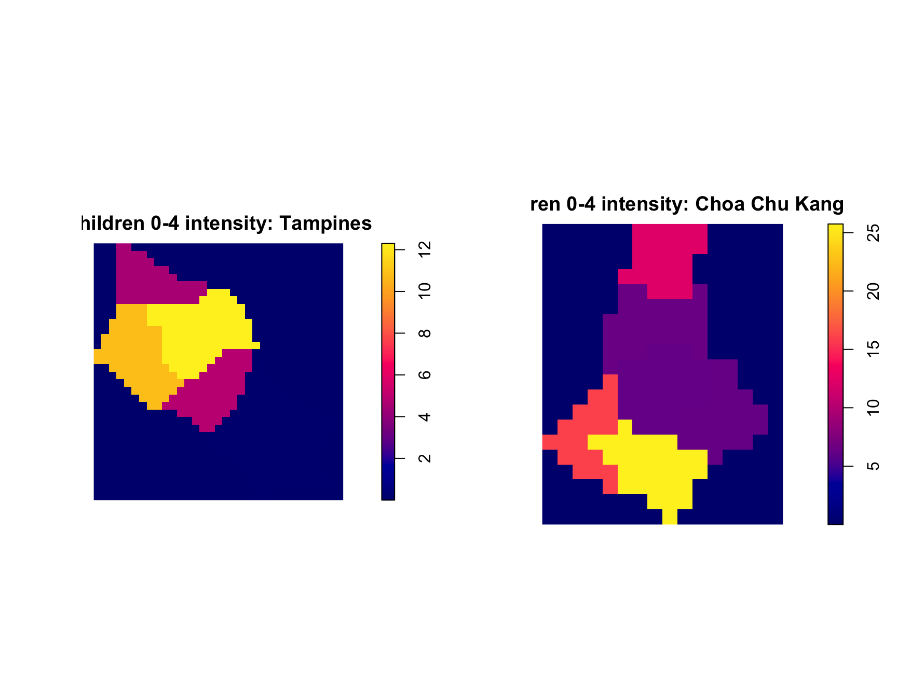
par(mfrow = c(1, 1))set.seed(42)
pcfpop_tm <- envelope(childcare_tm_ppp_km, pcfinhom, lambda = lam_pop_tm,
nsim = 99, verbose = FALSE)
pcfpop_ck <- envelope(childcare_ck_ppp_km, pcfinhom, lambda = lam_pop_ck,
nsim = 99, verbose = FALSE)
data.frame(
town = c("Tampines", "Choa Chu Kang"),
clustered = c(outside(pcfpop_tm, "above"), outside(pcfpop_ck, "above")),
regular = c(outside(pcfpop_tm, "below"), outside(pcfpop_ck, "below"))
) town clustered regular
1 Tampines 0.01953125 0
2 Choa Chu Kang 0.00000000 0The answer barely moves. Against a null built from where the children actually live, rather than from a smoothed version of the centres themselves, Choa Chu Kang shows nothing outside its envelope at any distance and Tampines shows a small excess over about 2% of the range.
The agreement is worth more than the size of the residual. The two nulls are built from completely different information, one from the childcare points and one from the census, and they point the same way. The circularity I was worried about does not appear to be driving the earlier result, and the conclusion now rests on an external covariate of the kind Floch et al. ask for rather than on the pattern explaining itself.
The small Tampines residual is the one thing I would look at next. It is weak enough to be noise across 99 simulations, but it is in the direction of clustering, and Tampines is the town where the housing is densest.
5.2.3.3 What none of this can settle
Section 4.3.2 of Floch et al., one of the core readings, is a warning that applies to everything above, and it is worth quoting because it states the problem more precisely than I could:
[T]he same aggregated or dispersed structures can be obtained with an inhomogeneous Poisson process in which the intensity of the process varies in space but the points are independent of each other. A single observation of a spatial distribution does not allow for any distinction between first- and second-order properties of a process in the absence of additional information such as that provided by a model that links a covariable to the intensity.
That is the identification problem this exercise ran into empirically. A clustered-looking map can mean centres attract each other (second-order), or that centres are simply more numerous where families live (first-order). One snapshot cannot separate them. Floch et al. cite Ellison and co-authors on exactly this: natural advantages, which raise intensity, have an effect “that is indistinguishable from that of positive externalities” causing aggregation. For childcare, “many young families here” and “operators cluster near each other” produce the same picture.
It also names the two standard escapes, and they are the two methods that appear in this exercise: the inhomogeneous K function of Baddeley et al., which I used through Linhom and pcfinhom, and the Kd of Duranton and Overman, which I did not.
This forces an honest qualification of my own result. The escape only works if the intensity comes from outside the pattern, from a covariate such as resident population. Mine did not. I estimated it with a kernel density of the very points being tested, so any genuine short-range clustering was partly absorbed into the “trend” before the test ran. That biases the inhomogeneous result towards finding nothing, which is what it found.
My conclusion is therefore narrower than it first appears. The pattern is consistent with centres being located wherever demand is, and this data cannot demonstrate interaction on top of that. That is not the same as proving no interaction exists.
Doing better needs the covariate, which is the natural next step and the reason the limitation below is first on the list.
5.3 Limitations
Where this exercise falls short:
- The population null is coarse. I did test against resident children aged 0 to 4 rather than only against CSR, which was the main gap. But the census gives one figure per subzone, so the intensity surface is a step function that jumps at subzone boundaries rather than a smooth demand surface. Any residual clustering measured at distances shorter than a subzone is partly a product of that blockiness.
- Edge effects at the coast. All functions were used with their best available edge corrections, but the coastline makes the window irregular and some bias remains at short distances.
- Description, not explanation. Even with the population covariate, this is still a description of where centres are. It says nothing about capacity, waiting lists or whether supply meets demand, and nothing about change over time. The spatio-temporal extension in Lesson 3 is where the time dimension starts.
- Attribute data is thin. The current childcare table carries almost no useful attributes (capacity, hours, fees), so I could not stratify the analysis, e.g. cluster analysis for centres with and without infant-care places, which is the policy-relevant question.
None of these change the results above, but they do limit how far the results can be pushed.
5.4 Summary
At the national scale childcare supply is heavily concentrated, and the concentration sits in a central-eastern corridor that survives every bandwidth I tried. Clark-Evans, the quadrat chi-square test and the G, K and L functions all agree on that.
The second-order results need more care than the chapters suggest. Both towns look strongly clustered against a homogeneous CSR null, but that null assumes centres could have gone anywhere with equal probability, which is not true of a service that follows housing. Testing against an intensity-adjusted null instead, and using the non-cumulative pair correlation function rather than K or L, almost all of it goes. Choa Chu Kang shows no departure from its envelope at any distance, and Tampines only a small one, over about 2% of the range.
So the reading I would defend is that childcare centres are concentrated because people are concentrated, and that this data shows little sign of the centres responding to each other on top of that. That conclusion holds under both a pointwise and a global envelope, which is more than the J function manages.
Getting there took three corrections to my own first answer: one for the null, one for the cumulative functions, and one for reading pointwise bands as though they carried a significance level. None of the three would have surfaced from the chapters alone.
6 Reflection
Lesson 1 was mostly about getting data into the right shape. This exercise was less about mechanics and more about what the tests were comparing against.
The null hypothesis took up most of my time. Every test in Part 2 ran without complaint and reported strong clustering, and none of them were wrong. But CSR treats a reservoir and a housing estate as equally likely places for a childcare centre, so a service that follows families gets reported as clustered more or less by construction. When I rebuilt the null from census counts of children aged 0 to 4, most of the clustering went away. The code was fine throughout. I had not thought about what the comparison assumed.
The mistake I spent longest on came from using the wrong file. The chapters read ChildCareServices.kml, which is not in the book’s GitHub repository, so I substituted a different geocoded childcare layer that is, CHILDCARE.shp from a later chapter. Both look official and both are childcare centres in Singapore. But the substitute had 174 coordinates shared by more than one centre, including 25 at a single point, and that made the adaptive-bandwidth map in Part 1 look nothing like the book’s. I assumed at first that the chapters had glossed over something. The real explanation was that I was not using their data. Once I tracked down the actual KML, Choa Chu Kang returned R = 0.84097 and p = 0.008866, matching the chapter exactly.
Two smaller errors followed the same pattern. I read the inhomogeneous L curve as evidence that centres space themselves out, when it was an artefact of L accumulating small deviations across distances; the pair correlation function showed nothing at any distance. And before finding the right file, I assumed a difference from the chapter came from the newer planning boundaries and wrote that up, when both boundary editions return the same result. In all three cases I had an explanation that sounded reasonable and did not test it.
The terminology caught me out once. The pair correlation function is written g(r), and the lesson slides use G(r) for the nearest-neighbour function. They are different functions, and I had to go back to Gimond to be sure which one I was reading about.
I only checked the Monte Carlo simulation envelopes properly after a classmate asked on Piazza whether they were pointwise or global. Until then I had been quoting the share of the distance range where a curve sits outside its band as though that were a result, and it is not. Those bands are pointwise, so with hundreds of distances on the axis a curve straying outside somewhere is close to expected. The glocal = TRUE in the chapters does not guard against this, because no argument by that name exists. Rerunning everything with global envelopes left the main conclusion standing but removed the J function result completely.
If I did this again I would confirm the exact data file before writing anything, and check for coincident points and settle the study window as a first step rather than partway through. The file I read mattered more than any method I picked, which is not where I expected the sensitivity to be.
7 References
Grouped as the Lesson 2 page groups them, with a note on where each one is used here. Sources listed on that page but not drawn on are left out rather than padded in.
7.1 Hands-on chapters
- r4gdsa Chapter 4: First-order Spatial Point Patterns Analysis Methods and Chapter 5: 2nd Order Spatial Point Patterns Analysis Methods. Reproduced in Parts 1 and 2, and reviewed in Part 3.
7.2 Core readings
- Yuan, Y., Qiang, Y., Bin Asad, K., and Chow, T. E. (2020). Point Pattern Analysis. The Geographic Information Science & Technology Body of Knowledge, 1st Quarter 2020 Edition, John P. Wilson (ed.). DOI: 10.22224/gistbok/2020.1.13. Source of the warning that CSR is a weak null for events that track a covariate, which drives the section on choosing a null hypothesis.
- Yin, P. (2020). Kernels and Density Estimation. The Geographic Information Science & Technology Body of Knowledge, 1st Quarter 2020 Edition, John P. Wilson (ed.). DOI: 10.22224/gistbok/2020.1.12. The bias-variance framing behind the bandwidth comparison, which I measure rather than restate.
- Chapter 4 Spatial distribution of points of Floch, J.M., Marcon, E. and Puech, F. (2018) Handbook of Spatial Analysis: Theory and Application with R. Section 4.3.2 states the identification problem between first- and second-order effects that limits the whole exercise; section 4.5.1 sets out the Kd function I describe but do not run.
7.3 References
- Baddeley, A., Rubak, E. and Turner, R. (2015) Spatial Point Patterns: Methodology and Applications with R, Chapman and Hall/CRC. Section 3.4.4 is why the exercise checks for coincident points before running anything.
- O’Sullivan, D. and Unwin, D. (2010) Geographic Information Analysis, Second Edition. John Wiley & Sons, New Jersey. Definitions of the modifiable areal unit problem, used in the quadrat section, and of edge effects, used when the study window is buffered.
- Chapter 11 Point Pattern Analysis of Intro to GIS and Spatial Analysis, sections 11.2, 11.3, 11.3.1 and 11.4. Section 11.3.3 of the same chapter introduces the pair correlation function as a non-cumulative alternative to K, which is what corrects the reading of the inhomogeneous L curve. Rendered version consulted at https://rstudio-pubs-static.s3.amazonaws.com/481933_61ed3eff92e74c04a52d44a48b1b4548.html.
7.4 Applications
- Donthu, N. and Rust, R. T. (1989) “Estimating Geographic Customer Densities Using Kernel Density Estimation”, Marketing Science, 8(2), pp. 191-203. Their normal-reference bandwidth rule is
bw.scott, tested here against the chapters’ default. - Wartman, J. and Malasavage, N. E. (2010) “Spatial Analysis for Identifying Concentrations of Urban Damage”, in Methods and Techniques in Urban Engineering, InTech. The argument that the study area must be set objectively, which the window test supports.
- Borruso, G. and Porceddu, A. (2009) “A Tale of Two Cities: Density Analysis of CBD on Two Midsize Urban Areas in Northeastern Italy”, in Studies in Computational Intelligence, Geocomputation and Urban Planning, pp. 37-56. The claim that bandwidth is the only arbitrary variable, discussed alongside Wartman.
7.5 Enrichment
- Prof. Luc Anselin on point pattern analysis (YouTube). Of the six parts, this exercise uses Point Pattern Analysis: Quadrat Counts for the quadrat method and the variance-mean ratio, and Point Pattern Analysis: F and J Functions for the J function. Point Pattern Analysis: K, L and Kd Functions covers the Kd indicator discussed in Part 3.
7.6 Cited within the above
- Clark, P. J. and Evans, F. C. (1954), for the nearest-neighbour index used throughout Part 1.
- Duranton, G. and Overman, H. G. (2005), for the Kd function, via Floch et al. and Anselin.
Data: childcare centres, Early Childhood Development Agency via Data.gov.sg (geocoded edition); planning subzones, URA 2019 Master Plan, Data.gov.sg; resident population, Singapore Census 2020 via Data.gov.sg. Analysis in R with spatstat, sf, terra and tmap.